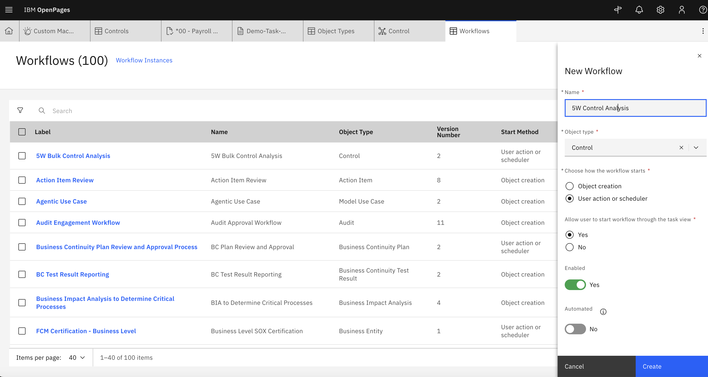
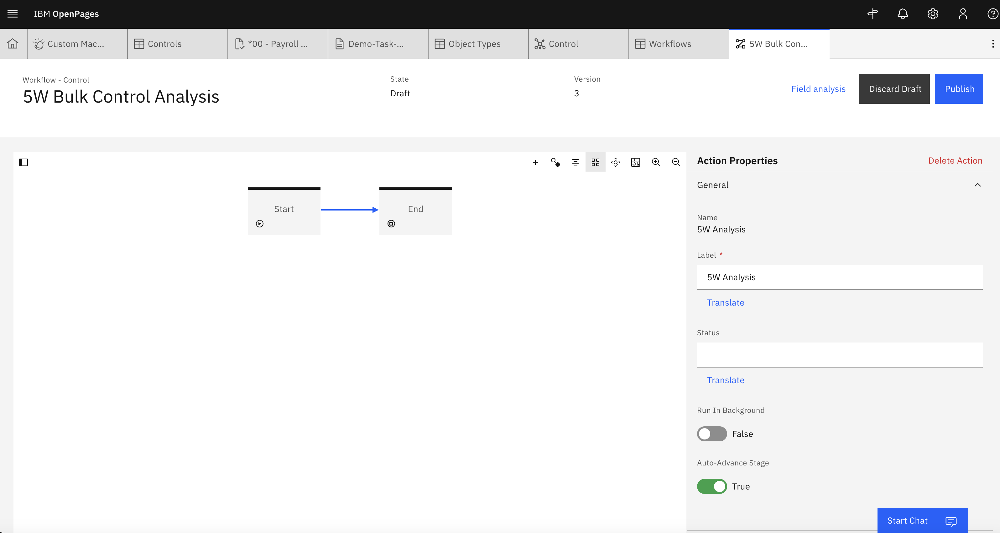
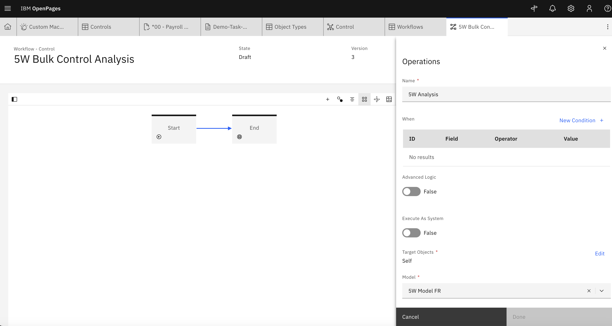
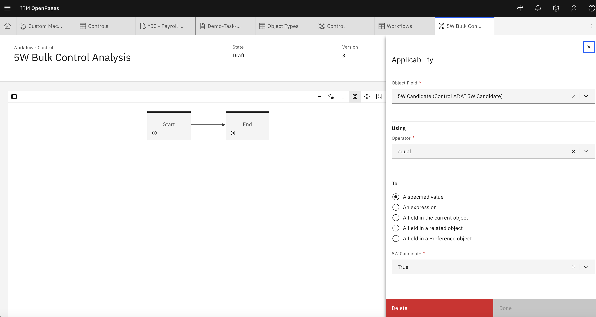
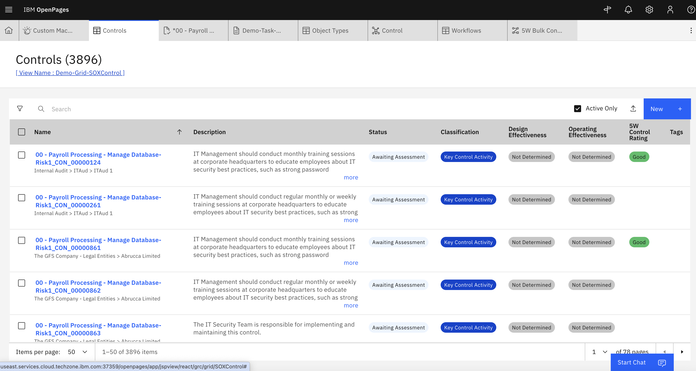
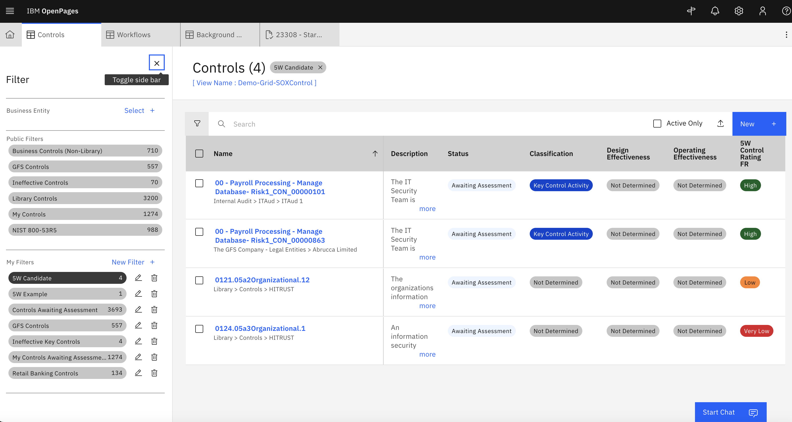

Lab 2.3: Execute AI in Bulk
So far, we have been executing AI through user interactions - let's look at how we can apply AI at scale.
1. Create workflow
-
So that we don't execute the AI against every single control, first identify candidate records. We can do this by adding a dummy field called '5W Candidate', adding it to the Control view and then setting this as a valid value for a few controls. Later we will add it as a condition for the workflow.
-
From the Administration menu, go to Solution Configuration → Workflows
-
Create a new workflow. Provide the following parameters:
- Name: Add a suitable name
- Object type:
Control - Choose how the workflow starts:
User action or scheduler - Allow user to start workflow through the task view:
Yes - Enabled:
Yes -
Automated:
No
 -
Add only a start and end block.
-
Add an action connecting the start to the end block. Provide the following:
- Name: Add a suitable name
- Label: Add a suitable label
- Run In Background:
False -
Auto-Advance Stage:
True -
Provide no conditions. Click New Operation + under Validations and Operations to add the AI model.
-
For the new operation, provide the following:
- Operation:
Run an AI Model - Name: Add a suitable name
- When: Keep empty
- Advanced Logic:
False - Execute As System:
False - Target Objects:
Self -
Model: Select your deployed AI model 
-
Clicking on the empty area in the canvas will display the Workflow Properties. Scroll down to Applicability and click New Condition +.
-
In the new condition, ensure that the 5W Candidate field created earlier is equal to a specific value that you set candidate records as. 
-
Publish the workflow.
2. View Results at Scale
-
Modify the Control Grid View to see the 5W results at a high level. Via the hamburger menu, navigate to Assessments > Controls.
-
With Debug Info displayed, naviagte to the View for the Control Grid. [screenshot with cursor hovering over the control grid view name] 
-
Add the 5W Control Rating field to the grid and publish the view.

3. Test the Bulk AI Execution
-
Go back to the workflows page.
-
Select the workflow created for the 5W Bulk Control Analysis and start the workflow.

-
We can check the progress of the workflow in Administration menu, go to Other → Background Processes

-
We can see the output by going to our Control grid view and using the 5W Candidate field as a filter 